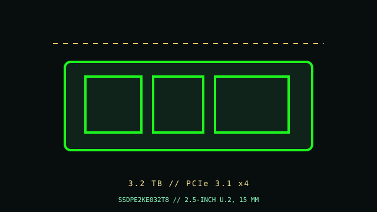

[ PCIE 3.1 X4 NVME // IDENTIFIED PRODUCT ]
Intel SSD DC P4610 3.2 TB
3.2 TB 2.5-inch U.2, 15 mm; PCIe 3.1 x4 NVMe SSD. Manufacturer SKU SSDPE2KE032T8; product-specific ratings and service notes below. Vendor-rated figures are specified only where available for this capacity in the cited manufacturer material.

IDENTIFICATION: Verify complete part number, suffix, serial/date code, hardware revision and firmware on the physical label. Capacity, heatsink, regional SKU and OEM firmware variants are not interchangeable.
Manufacturer-identified specifications
| Product / MPN | Intel SSD DC P4610 3.2 TB — SSDPE2KE032T8 |
|---|---|
| Capacity / form factor | 3.2 TB; 2.5-inch U.2, 15 mm. |
| Interface / host lanes | PCIe 3.1 x4. Host link negotiates to the supported socket, CPU/chipset lane allocation and firmware; verify system manual. |
| Protocol | NVMe; product-family revision as identified in the linked manufacturer documentation. Verify exact revision for OEM units. |
| Sequential performance / endurance | Up to 3,200 MB/s read and 3,000 MB/s write; Not stated on the linked Intel SKU page; confirm from the exact warranty and product brief. These are vendor ratings, not guaranteed sustained host results. |
| Controller / NAND or media | Intel 3D TLC NAND; product brief does not promise fixed replaceable BOM. |
| Thermal / service detail | U.2 NVMe server bay and validated airflow required. |
Compatibility, boot, installation & service
- Check the system manual for NVMe signaling, drive length/carrier, lane sharing, PCIe generation, BIOS/UEFI NVMe boot support, and any supported-device list. Confirm that the target operating system includes a compatible NVMe driver (or vendor-required driver) for both installation and boot. Physical fit is not boot compatibility.
- Client M.2 drives need a compatible M-key NVMe socket and adequate module/heatsink clearance. Enterprise U.2/U.3 or add-in card units require a supported carrier/backplane, power, cooling and firmware; SATA-only 2.5-inch bays are not NVMe paths.
- Factory heatsinks and thermal pads are model-specific. Do not stack covers or remove heatsinks unless vendor service instructions allow it; airflow affects sustained performance and thermals.
- Maintain backups; before replacing a boot drive confirm recovery media, encryption keys, UEFI settings and host support. Shut down fully, remove standby power as directed and use ESD precautions. Do not hot-plug unless platform documentation explicitly permits it.
Model-specific manufacturer references
- Intel SSD DC P4610 3.2 TB — manufacturer product/specification referencePrimary model-family source for SKU identification and stated ratings. Confirm exact capacity suffix, revision, datasheet, warranty, current lifecycle and host-specific fit. No unlisted NAND/controller or compatibility claim is inferred.
- NVM Express — specificationsProtocol reference only; it does not verify drive-specific ratings.
Manufacturer sequential maximums are condition-dependent. Endurance and DWPD reflect stated vendor workload and warranty terms; consult the exact current datasheet before deployment.